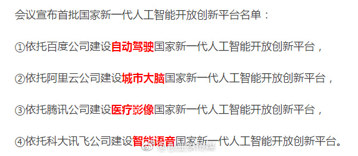
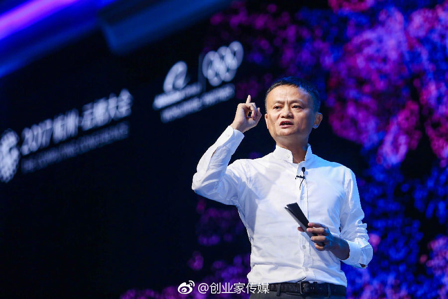
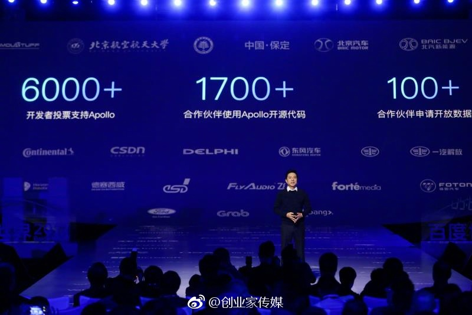
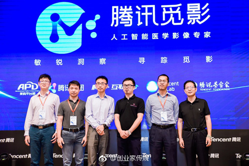

几大互联网公司开始权贵资本主义（Crony Capitalism）化了。 //@马少平THU:从另一个方面考虑，最迫切需要的是这4个平台吗？//@刘成林_NLPR:我很关心这企业建的平台能否真正开放。还有，四个平台落在哪里是如何决策的。//@马少平THU: 这4个平台让他们自己建就可以了，没必要国家出面啊//@老编辑不上班:@创业家传媒:# 创业家 · 快讯 # 国家公布人工智能四大平台！一场颠覆已在路上…网页链接 